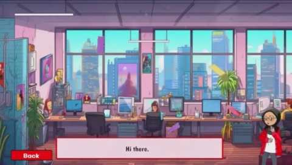
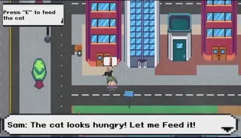

Tune Protect Onboarding
A gamified onboarding application that introduces new employees to workplace information through animated guidance, video content and short interactive games.
Onboarding experience
The app contains approximately 30–35 animated scenes with different onboarding topics. I used Unity Timeline to bring together the 2D character animation, backgrounds, narration and sound. I also integrated standard video and 360-degree video content.

Mini-games
The activities include an office-themed object-slicing game, a basket-catching game where players collect falling insurance-related items, and two top-down pixel-style games. One focuses on community-help tasks such as feeding a cat, fixing a pipe and helping someone in need; the other challenges players to resolve an office computer-virus problem.

My contribution
I was the main developer responsible for the application, including its mini-games, visual effects and interactive flow. It was built in Unity for Windows PC.